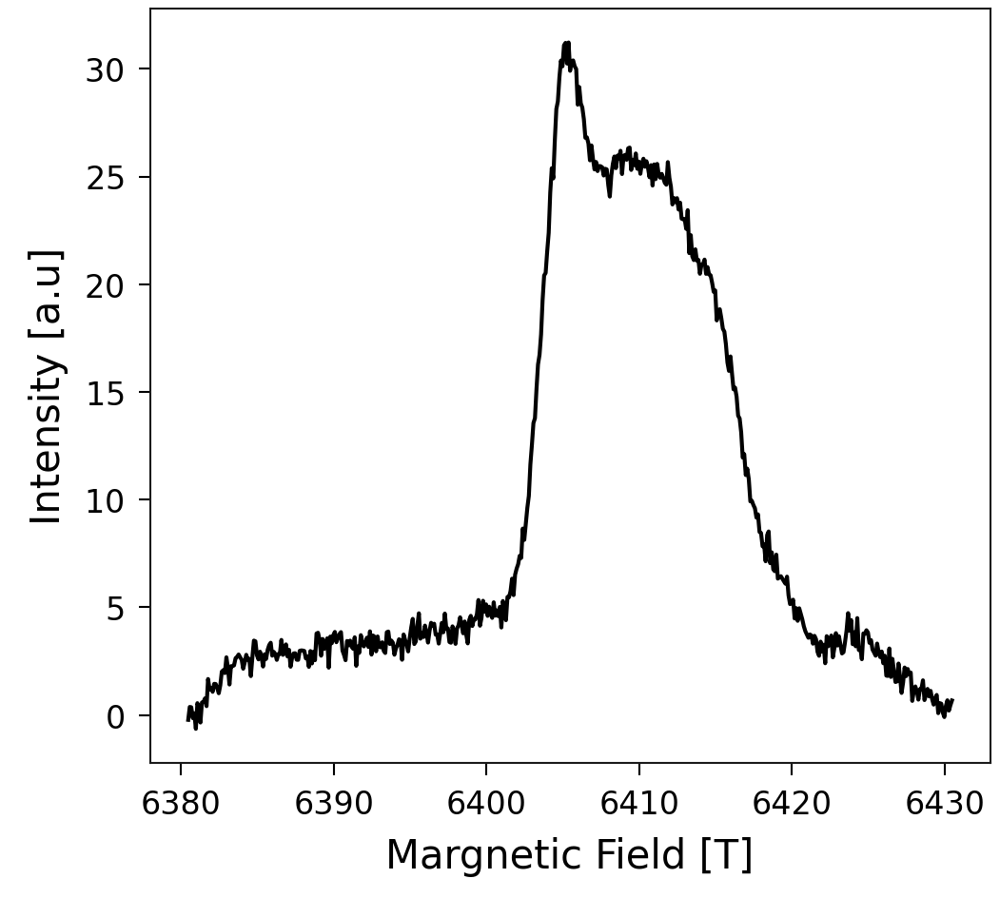
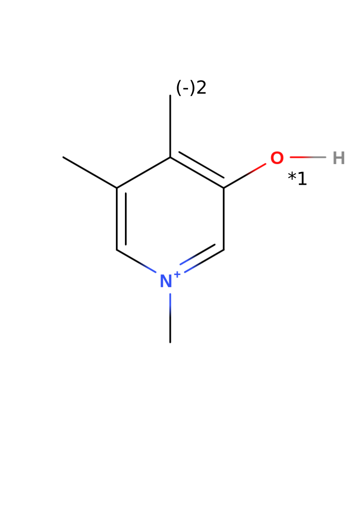
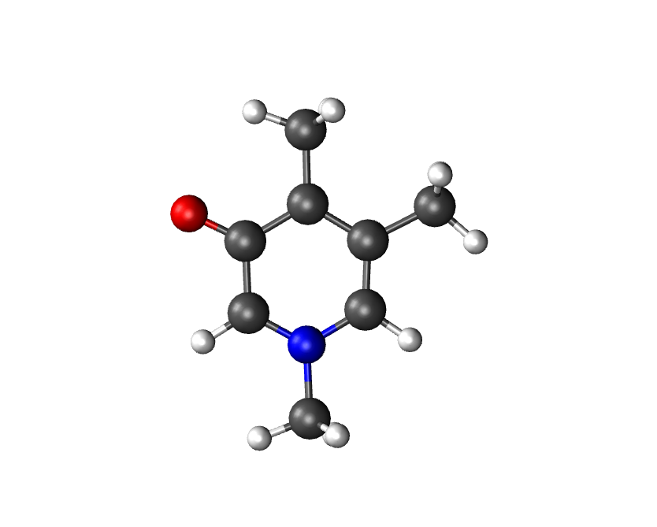
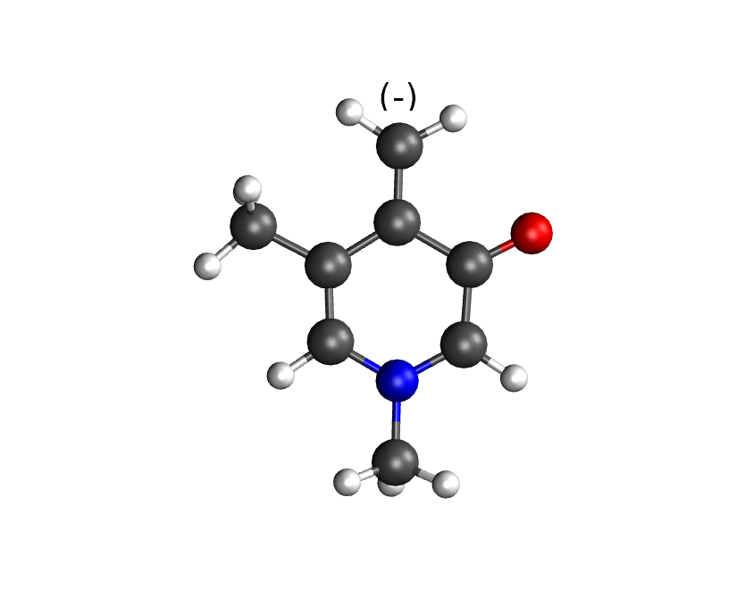
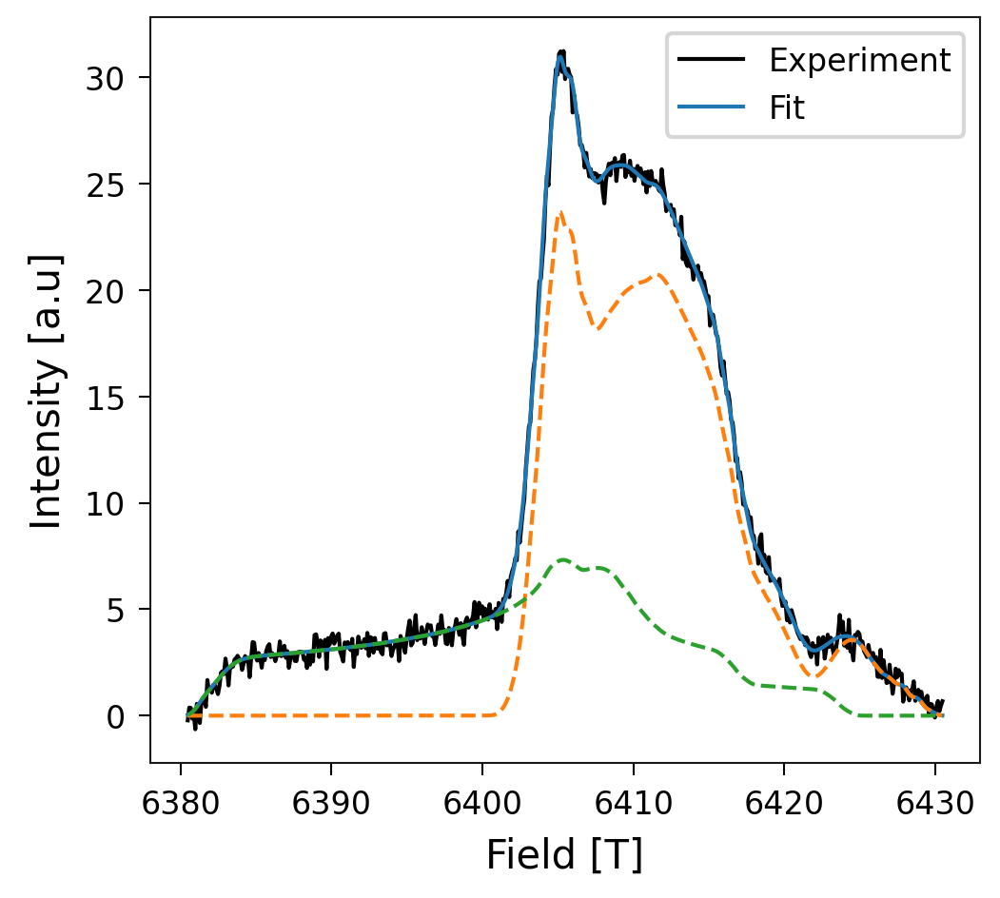

Theoretical EPR spectrum
Attention
To use the tools of myutils that are part of this tutorial, be sure that Orca is well set up. Check Orca set up for more information.
For the impatients
This tutorial builds a whole project, if you only want to compute gvalues of a molecule with a radical that you already know, go directly to Compute the g-values.
Suppose that you have an EPR absorption spectrum that you got from a sample of collagen that looks like this:
{kind=link}

In this tutorial, you will learn how to discover from which radicals species this spectrum comes from, using myutils. This process is usually done by finding the best g-values that fit into the experiments by trial-and-error. Our procedure, in contrast, consists in computing the spectrums of some candidates that you expect in your sample and finding which ones fit into the spectrum. With the final fitting, you obtain the concentration of each radical specie in your sample. In this case, we are going to assume a rupture of trivalent crosslinks that are shown to be sacrificial bonds according to Rennekamp, et al., 2023.
System
Consider the radicals in a broken trivalent crosslink, which corresponds to the next molecule:
{kind=link}

Note that the structure of this example without radicals has a total charge +1. The numbers 1 and 2 in the image represent the two candidates that we are going to consider in this tutorial. Candidate 1 results from taking out the hydrogen binded to the oxygen and increasing the multiplicity to 2 (radical). The Candidate 2 results from deprotonising the methyl group from the first candidate, which leads to a total change of zero. Considering that the distribution of charges is found by the DFT step, the second candidate can also be seen as a radical in the methyl group and a negative charge in the oxygen.
Starting a new project
To use all the advantages of myutils, the files should be located in a certain way. During the tutorial you are going to build it step by step. You can have an idea of the general structure with the next flowchart:
graph TD
node1["Tutorial"]
node1 --> node2[<candidate>]
node2 --> node3[opt]
node2 --> node4[<i>-<candidate>]
node1 --> node5[experiments]
In this case, “Tutorial” is the name of the whole project, “candidate” is the molecule that you use as a base to create the radical candidates and “<i>-<candidate>” is the i-th radical candidate with the key name that you choose. For this tutorial, the flowchart would look like this:
graph TD
node1["CollagenEPR"]
node1 --> node2["PYD"]
node2 --> node3[opt]
node2 --> node4[1-OxygenCharged]
node2 --> node6[2-OxygenNeutral]
node1 --> node5[experiments]
Your task now is to create this file structure as follows:
mkdir CollagenEPR
mkdir CollagenEPR/PYD
mkdir CollagenEPR/PYD/experiments
mkdir CollagenEPR/PYD/opt
mkdir CollagenEPR/PYD/1-OxygenCharged
mkdir CollagenEPR/PYD/2-OxygenNeutral
Right at this point you can save your absorption spectrum in “experiments” directory. You can save as many meassurements as you have. They should be .dat files with two columns: field and intensity.
Create a Model
To compute radicals, an XYZ file containing the molecular coordinates is required. You can build it with your favorite tool. I recommend to use https://molview.org, which allows you to build your molecule from the structural formula and download the information of the coordinates.
Note
To transform the .mol file downloaded from MolView into an .xyz file, use
obabel model.mol -O CollagenEPR/PYD/opt/model.xyz
You might want to save an image of your molecular structure because in the end
we are going to summarize our results in a clear and easy way. That image
should also show the label of the candidates as the image above. Save that
image as CollagenEPR/PYD/model.png
Optimize the model
Depending on how you build your molecule, the model could be far from a stable configuration. Be aware that for computing the g-values of the candidates, we have to use optimized configurations. An optimization of the initial model might accelerate the subsequent optimization of the radical species derived from it. However, if you already have a good structure or if you want to compute the absorption spectrum of only one radical, you can continue to the next step by renaming your model as
mv CollagenEPR/PYD/opt/model.xyz CollagenEPR/PYD/opt/opt.xyz
Otherwise, you have to optimize your structure. You can do that with MyUtils using
$(myutils gval_workflow -path) -c 1 -m 1 -e -v
where the flag -e avoids to compute gvalues and HFC in this molecule, which
would not make sense for this case because it does not have any radical.
Use myutils gval_workflow -h to check the role of the other flags.
Note
gval_workflow is a bash script that contains some variables to set up a
slurm queue system, which means that you could also use this code to run it
in a HPC cluster using sbatch $(myutils gval_workflow -path) ....
To modify those options or add the ones of your queue system, make a copy
of this file and then submit your job. This can be done with the command
cp $(myutils gval_workflow -path) ./<name_of_preference>.sh. You
can also use it to understand and modify this code according to your
style. If you improve the project, don’t hesitate to merge your
changes to MyUtils
Create radical models
Use the optimized model to create the radical candidates. You can do that by
removing the hydrogen that cap the radicals’ electron structure. One way to do
that is vewing your molecule with your favorite visualization tool (VMol,
PyMol, vmd…) to check the corresponding index of the atom and remove it. Save
the xyz file of a modified molecule in a new directory called
<n>-<name of candidate>. In this case, we proceed to create the radical
candidates from CollagenEPR/PYD/opt/opt.xyz. We only have to know
that the indexes of the hydrogens to be removed are 6 and 16 (starting from 1).
Considering that the xyz format includes two heading lines (a first line with
the number of atoms and a second line for comments), the 6th and 16th atoms
correspond to the 8th and 18th lines respectively. Then, located at
“CollagenEPR/PYD”, we execute the next commands to remove those atoms from the
optimized molecule and save the outcome in the proper directly:
sed -E "1s/.*/21/ ; 8d" opt/opt.xyz > 1-OxygenCharged/model.xyz
sed -E "1s/.*/20/ ; 18d ; 8d" opt/opt.xyz > 2-OxygenNeutral/model.xyz
The resulting molecules should look like the next figure (candidate 1 on the left, candidate 2 on the right):


Compute the g-values
Once you have the files called <n>-<name of candidate>/model.xyz
corresponding to each radical, run
cd 1-OxygenCharged
$(myutils gval_workflow -path) -c 1 -f 'g0,4d2' -v
cd ../2-OxygenNeutral
$(myutils gval_workflow -path) -c 0 -f 'g0,4,6d2' -v
The flag -f indicates which atoms should be included in the hyperfine
calculation. If the argument of this flag starts with g,
myutils.g_values.bash_scripts.g_valsetup.HFC_relevantA
is used to guess the hydrogen atoms around the possible “radical locations”. If
you use the guess util, be sure to add the depth of the neighborhood. In this
case, for the HFC, we included all the HFC_relevantA atoms in the neighborhood
of the nitrogen, the oxygen and the carbon that can be charged (in candidate
2). For more information of the guess function and the other flags, use
myutils gval_workflow -h. This workflow does what is explained in the
ORCA tutorial
and in
Zhe Wang’s tutorial.
Note
gval_workflow is a bash script that you can modify. See last comment for more details.
Tip
gval_workflow also computes frequencies by default. It includes computation of thermal properties. In particular, it computes the enthalpy of the molecule, which is useful in computation of BDEs. If you want to avoid this part, use the flag -b.
Postprocessing
Once your calculations are complete, you can use myutils gval_postpro to:
Render each model in a file called opt.png
Compute the spectrum obtained theoretically with easyspin.
Plot the gvalues of all the candidates in a file called gvalues.png
Create a table of the gvalues in gvalues_table.md
Create a file called vmd_image.md in each one of the candidate directories.
You just need to move to the master folder and run
$(myutils gval_postpro -path) -c PYD/ -e "../../experiment/field_intensity.dat" -f
Summarize your results
With the information obtained from the postprocessing, you can write a proper
README.md file to summarize your results. myutils gval_template makes
this analysis quite easy. Copy the source code in your main directory using
cp $(myutils gvals_template -path) ./write_readme.sh. This remplate
creates the README. To addapt it to your own project, modify the blocks
delimited by EOF with the correcponding information. Also, change
those parts that have <replace:. Then, run it and print the outcome in your README.md
file. In this case, we do
cp $(myutils gvals_template -path) ./write_readme.sh
sed -i "s/<replace: name of your candidates>/PYD/g" write_readme.sh
sed -i "s/<replace: experiment.dat>/field_intensity.dat/g" write_readme.sh
sed -i "s/<replace: fitting name>/fit2exper1/g" write_readme.sh
./write_readme.sh > README.md
and this creates a proper markdown file with the summary of all the results. Render your project with your tool of preference. Github and gitlab render this kind of files automatically. Your whole project should look now like the repository github.com/Sucerquia/collagenEPR.
Tip
You can transform your README.md into a webpage format using github Pages.
Fit
You will see that in the end of the summary, there is an image of the best Fitting possible with your candidates. In this case, it should look like this
{kind=link}

Great fit, isn’t it?! Now the question is how much of the spectrum comes from one of the candidates and how much from the other. The answer of this question is found in a table in the end of the document. The outcome in this case is
System |
Percentage |
|---|---|
PYD/2-OxygenNeutral |
70.03751698946618 |
PYD/1-OxygenCharged |
29.96248301053382 |
You got a perfect description of your EPR spectrum with the candidates you took into account! Now, you can use it with your own experimental data and radical candidates.